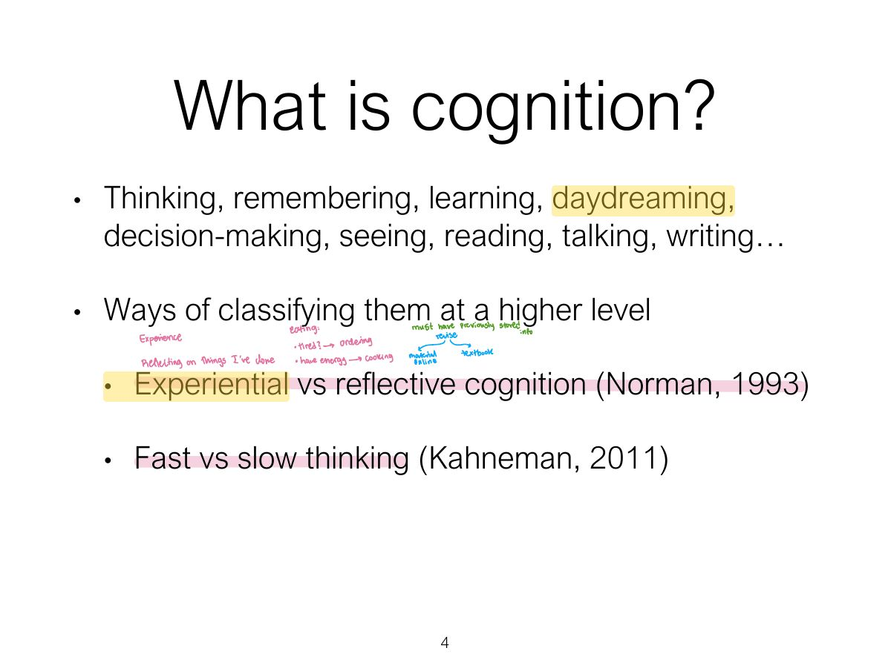
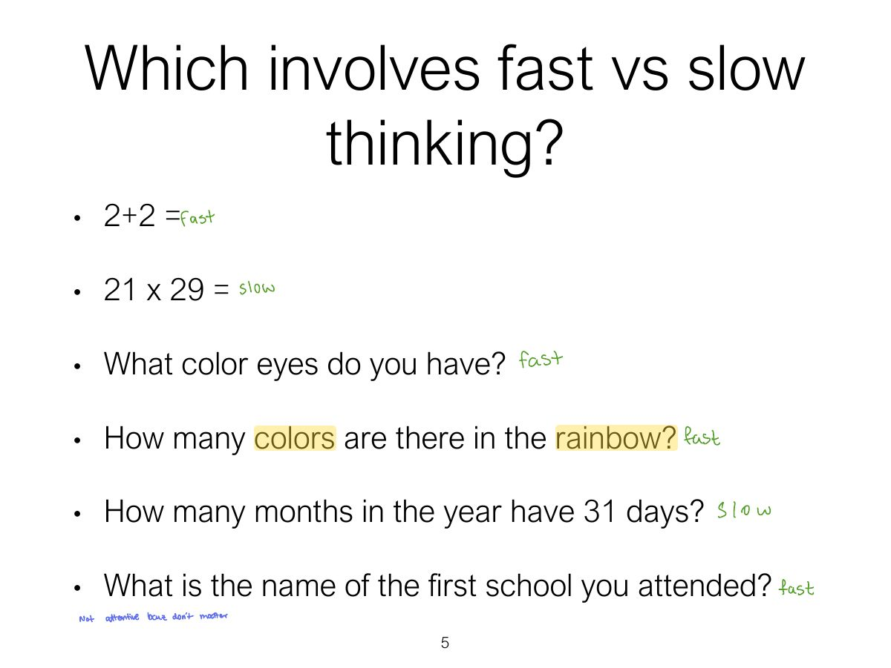
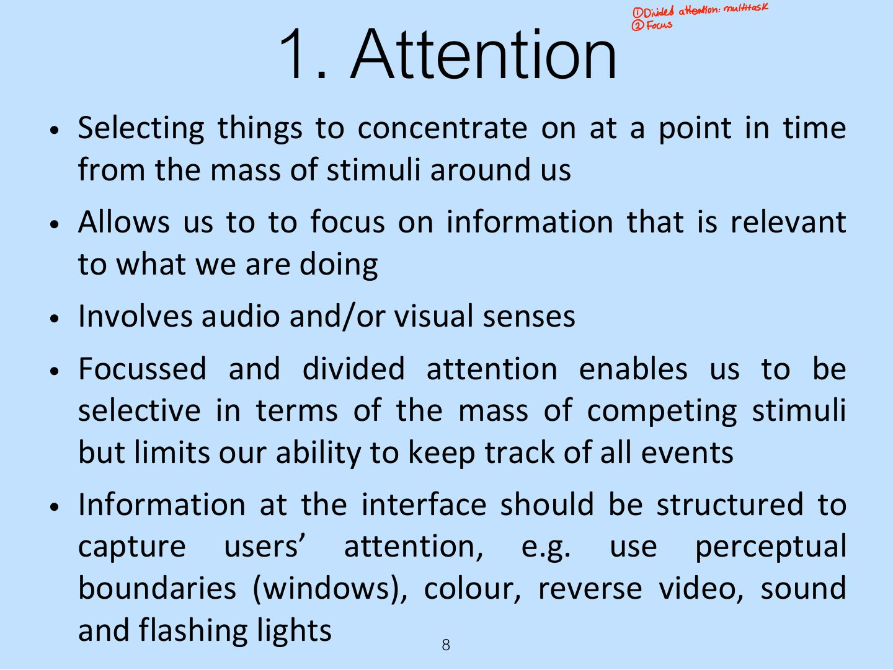
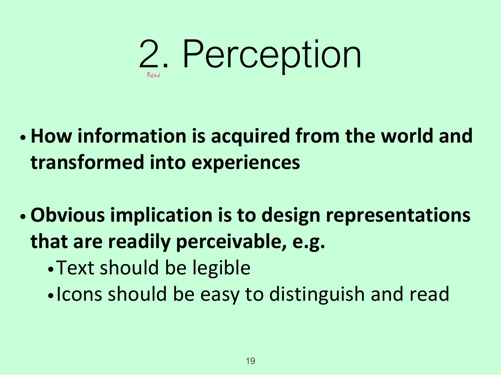
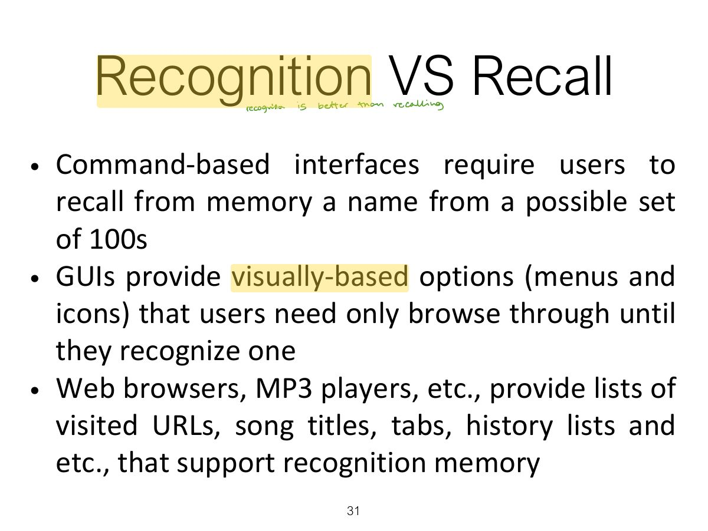
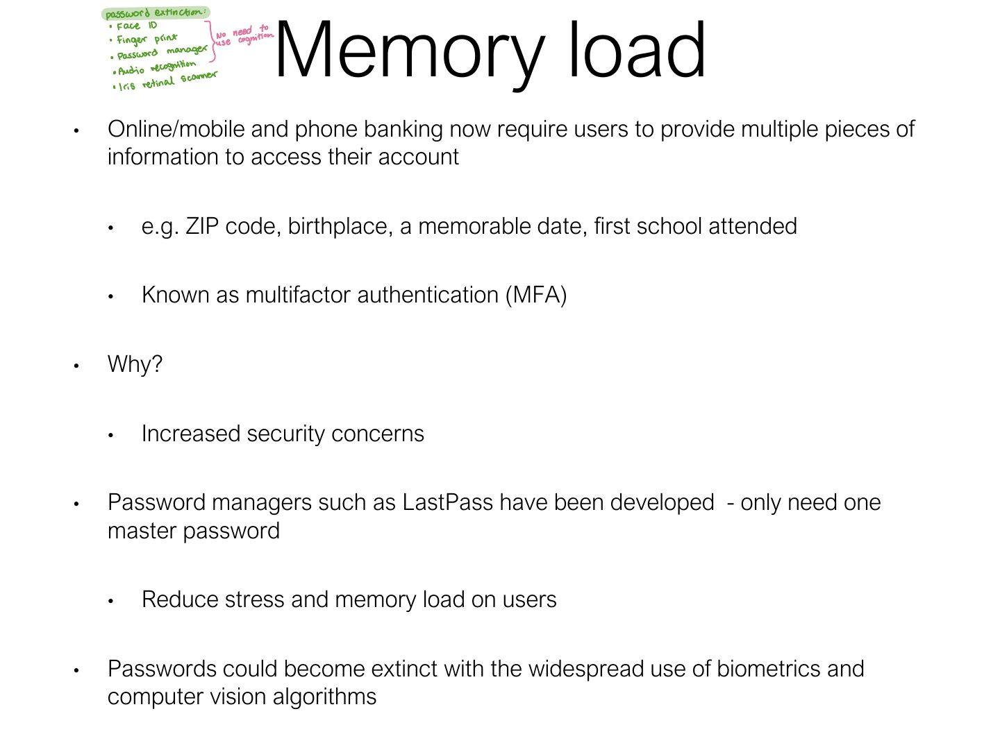
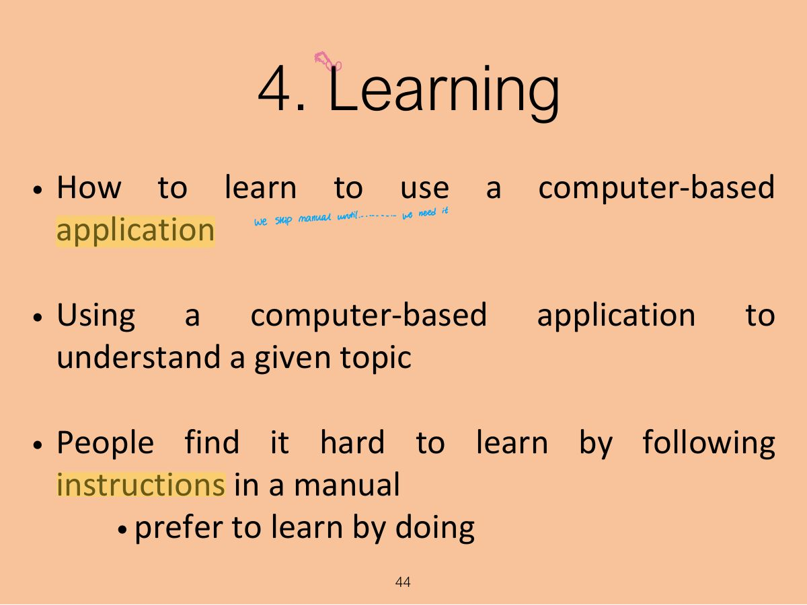
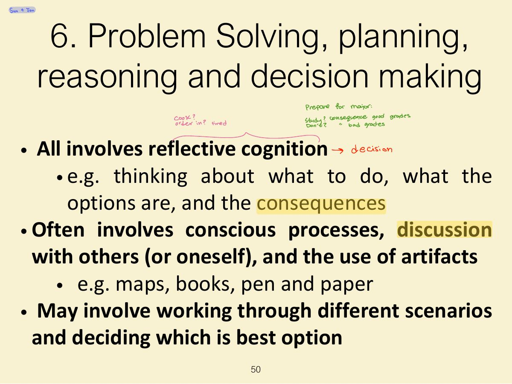

Graphical menus are easier than command lines mainly because:
Cognitive Aspects
What cognition is (fast vs. slow thinking), the cognitive processes (attention, perception, memory, learning, reading/speaking/listening, problem-solving) with design implications, and cognitive frameworks: mental models, the gulfs of execution and evaluation, information processing, distributed, external and embodied cognition.
How to read this page
Every original slide is shown unchanged. Yellow marks on a slide point to a numbered note: hover or tap a mark to jump to its note, and hover a note to see its marks. Questions tagged Past exam appeared on a real paper; Prediction questions are likely angles, not confirmed. Pick an answer to each question: a wrong pick tells you why it is wrong, so you can try again.
All 74 slides
- 1 Slide 1
- 2 Overview
- 3 Learning Outcomes
- 4 What is cognition?
- 5 Which involves fast vs slow thinking?
- 6 Why do we need to understand users?
- 7 Cognitive processes
- 8 1. Attention
- 9 Activity: Find the price of a double room at the Holiday Inn in Bradley
- 10 Activity: Find the price for a double room at the Quality Inn in Columbia
- 11 Activity
- 12 Multitasking & attention
- 13 Multitasking experiment
- 14 Multitasking at work
- 15 Is it OK to use a phone when driving?
- 16 NO.....
- 17 Are hands-free phones safer to use when driving?
- 18 Design implications for attention
- 19 2. Perception
- 20 Is color contrast good? Find italian
- 21 Are borders and white space better? Find french
- 22 Activity
- 23 Which is easiest to read and why?
- 24 Design implications
- 25 Design implications
- 26 3. Memory
- 27 3. Memory
- 28 Processing in memory
- 29 Context is important
- 30 Activity
- 31 Recognition VS Recall
- 32 The problem with the classic
- 33 What some designers get up to...
- 34 Why?
- 35 Personal information management (PIM)
- 36 Personal information management
- 37 Personal information management (cont)
- 38 Personal information management (cont)
- 39 Apple ’ s Spotlight search tool
- 40 Memory aids
- 41 Memory load
- 42 Digital Forgetting
- 43 Design implications
- 44 4. Learning
- 45 Learning
- 46 Design implications
- 47 5. Reading, speaking & listening
- 48 Applications
- 49 Design implications
- 50 6. Problem Solving, planning, reasoning and decision making
- 51 Design implications
- 52 Dilemma
- 53 Cognitive Frameworks
- 54 1. Mental model
- 55 1. Mental model (cont)
- 56 Everyday reasoning and mental
- 57 Heating up a room or oven that is
- 58 Heating up a room or oven that is
- 59 Exercise: ATMs
- 60 How did you fare?
- 61 How can UX be designed to help people build better mental models?
- 62 2. Gulf of execution & evaluation
- 63 Bridging the gulfs
- 64 3. Information processing
- 65 Limitations
- 66 4. Distributed Cognition
- 67 Slide 67
- 68 What’s Involved
- 69 5. External Cognition
- 70 Externalizing to reduce memory
- 71 Computational offloading
- 72 6. Embodied interaction
- 73 Summary
- 74 Extra Activity
What is cognition?

Notes
-
Cognition: what goes on in our heads when we carry out everyday activities: thinking, remembering, learning, deciding, seeing, reading…
Which involves fast vs slow thinking?

Notes
-
Fast thinking (experiential, automatic) vs. slow thinking (reflective, effortful).
1. Attention

Notes
-
Attention: selecting things to concentrate on; depends on clear goals and how information is displayed.
2. Perception

Notes
-
Perception: how information is acquired through the senses and turned into experiences. Use contrast, white space and grouping.
Recognition VS Recall

Notes
-
Recognition is easier than recall: GUIs show options so users recognize rather than remember commands.
-
Memory trick Menus and icons = recognition; command lines = recall.
Exam angle
Memory load

Notes
-
Memory load: 7 ± 2 (Miller) is about short-term memory items, NOT a rule for menu length.
-
Trap Don’t use "7 ± 2" to limit menu items or tabs: the items are visible, so no recall is needed.
Exam angle
Miller’s 7 ± 2 means menus should never have more than 7 items.
-
Menus rely on recognition, not short-term memory.
4. Learning

Notes
-
Learning: people prefer learning by doing; design for exploration and undo.
6. Problem Solving, planning, reasoning and decision making

Notes
-
Problem solving / planning / reasoning / decision-making: reflective cognition; show information needed for comparisons.
1. Mental model
Notes
-
Mental model: a user’s internal model of how a system works; often wrong (turning the thermostat up higher heats faster).
Exam angle
Setting the thermostat to maximum to heat a room faster reflects a faulty:
2. Gulf of execution & evaluation
Notes
-
Gulf of execution: gap between what users want to do and what the system lets them do. Gulf of evaluation: gap between the system state and the user’s ability to interpret it.
Exam angle
Users can’t tell whether their file was saved. This is a gulf of:
3. Information processing
Notes
-
Information processing: mind as a series of stages: encode → compare → select response → execute.
4. Distributed Cognition
Notes
-
Distributed cognition: cognition spread across people, tools and the environment (e.g. an air-traffic control team).
5. External Cognition
Notes
-
External cognition: using external representations (notes, calendars) to reduce memory load and do computational offloading.
6. Embodied interaction
Notes
-
Embodied interaction: thinking through the body and physical interaction.